Modèles statistiques, paramètres et estimateurs
9 septembre 2019
Objectifs
Distributions statistiques
- Décrire les caractéristiques et l’utilité des distributions normale et log-normale
- Connaître la relation entre densité de probabilité et probabilité cumulative pour une variable continue, et calculer ces quantités dans R.
- Comparer des données à une distribution de référence avec un diagramme quantile-quantile.
Estimation de paramètres
- Estimer la moyenne et la variance d’une population à partir d’un échantillon.
- Définir le biais et l’erreur-type d’un estimateur.
- Calculer les propriétés d’un estimateur en simulant l’échantillonnage.
- Interpréter un intervalle de confiance et calculer l’intervalle de confiance pour la moyenne d’une distribution normale.
Statistiques, paramètres et estimateurs
Au dernier cours, nous avons vu une série de statistiques descriptives: moyenne, variances, quantiles et autres. De façon générale, une statistique est une quantité calculée à partir d’observations de variables aléatoires.
Dans ce cours-ci, nous considérerons les observations comme le résultat d’un processus aléatoire décrit par un modèle statistique comprenant certains paramètres. Notre but principal sera de déterminer dans quelle mesure une statistique calculée à partir des observations constitue un bon estimateur du paramètre recherché.
Par exemple, si on mesure le poids d’écureuils roux et qu’on fait la moyenne de ces mesures (une statistique), quel est l’estimé du poids moyen de la population locale d’écureuils roux (un paramètre)? Quelle est sa marge d’erreur?
En général, un paramètre est une quantité théorique. Dans notre exemple, même si on pouvait recenser tous les écureuils, le poids des individus varie constamment et la composition de la population aussi (en raison des naissances, décès et migrations).
À la fin du cours, nous pourrons décrire ce qu’est le biais, la variance et l’intervalle de confiance d’un estimateur. Avant d’y arriver, nous allons d’abord revoir les concepts mathématiques de base permettant de décrire des modèles statistiques et un modèle particulièrement important, soit la distribution normale.
Distributions statistiques
Une distribution statistique (aussi appelée loi de probabilité) est une fonction qui associe une probabilité à chaque valeur possible d’une variable aléatoire.
Distribution discrète
Lorsque la variable est discrète, chaque valeur a une masse de probabilité, dont la somme doit être égale à 1. Par exemple, si \(x\) correspond au nombre obtenu en lançant un dé équilibré à 6 faces, la probabilité de \(x\) est de 1/6 pour chacun des nombres de 1 à 6. Puisque la probabilité est identique pour chaque valeur, on a ici une distribution uniforme.
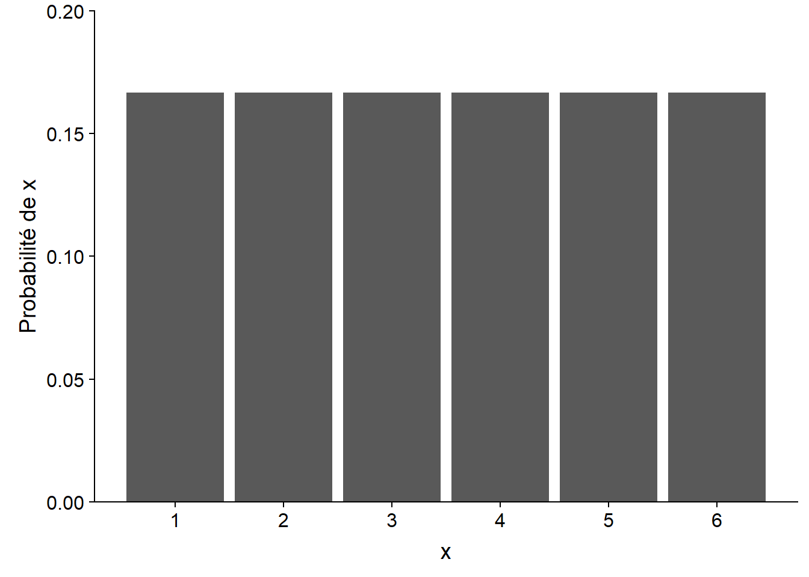
Distribution continue
Lorsque la variable est continue, le nombre de valeurs possible est infini, donc la probabilité d’obtenir précisément une valeur donnée est de zéro. La fonction de distribution associe donc une densité de probabilité à une valeur donnée.
Par exemple, voici une distribution de probabilité uniforme entre 0 et 6. La densité de probabilité est constante (1/6) dans l’intervalle et zéro à l’extérieur.
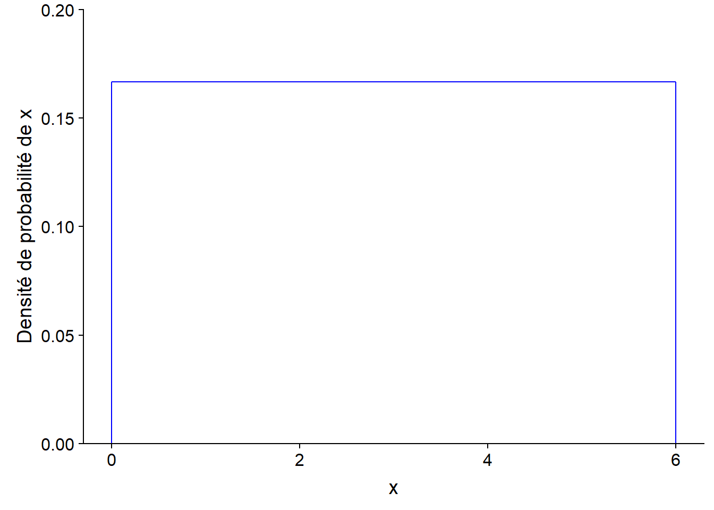
Pour une distribution continue, la probabilité que la variable se trouve dans un intervalle donné correspond à l’intégrale (l’aire sous la courbe) de la densité de probabilité dans cet intervalle.
Ici, la densité de probabilité est rectangulaire, donc il est facile de calculer la probabilité d’un intervalle. Par exemple, la probabilité d’obtenir une valeur entre 2.5 et 3 est égale à 1/2 (largeur de l’intervalle) x 1/6 (densité de probabilité) = 1/12 (~0.083). Cette valeur correspond à l’aire du rectangle rempli dans le graphique ci-dessous.
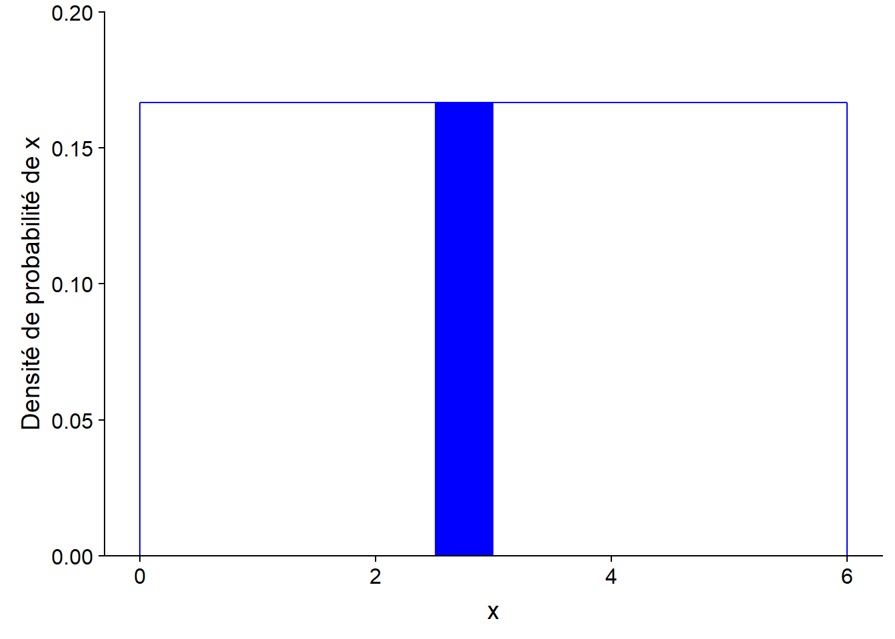
L’intégrale de la densité de probabilité sur l’ensemble des valeurs possibles de \(x\) (probabilité totale) doit être égale à 1.
Loi des grands nombres
En R, la commande suivante génère dix valeurs aléatoires (n = 10) tirées de la distribution uniforme (continue) entre 0 et 6, que nous avons vue dans la section précédente.
x <- runif(n = 10, min = 0, max = 6)
round(x, 2) # round affiche les valeurs avec 2 décimales## [1] 5.35 0.19 1.23 3.98 4.74 4.25 5.66 3.18 4.93 2.72Voici les histogrammes des valeurs obtenues pour différents \(n\). Que remarquez-vous?
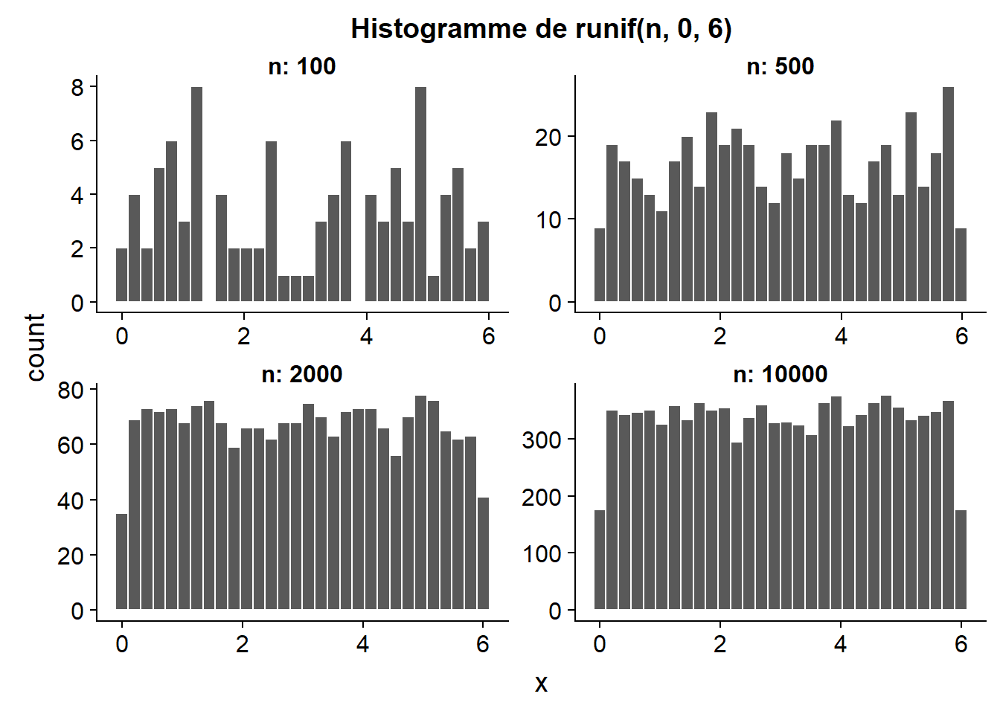
La fonction runif simule l’échantillonnage d’une variable qui suit une distribution uniforme. Plus la taille de l’échantillon aléatoire est grand, plus la distribution des valeurs de cet échantillon s’approche de la distribution de la variable dans la population. C’est ce qu’on appelle la loi des grands nombres.
La distribution normale
Motivation
Dans un système complexe, les variables que nous observons résultent de l’effet combiné de nombreux processus que nous ne pouvons pas directement percevoir. Par exemple, la taille d’une personne est influencée par un grand nombre de facteurs génétiques et environnementaux, le rendement d’un champ dépend de la météo pour chaque jour de la saison de croissance ainsi que du micro-habitat perçu par chaque plant, etc. Modéliser chacun de ces processus n’est généralement pas possible. Heureusement, lorsque de nombreux facteurs agissent indépendamment sur une même variable, leur effet total tend à converger vers certaines distributions statistiques bien connues. Nous verrons ici un exemple simple de ce phénomène.
Supposons que nous nous intéressons à une variable aléatoire qui est elle-même la somme de \(n\) variables indépendantes, et que chacune de ces variables suit la distribution uniforme entre 0 et 6 présentée ci-dessus. Même si nous ne connaissons pas la distribution de cette somme, la loi des grands nombres nous permet de l’approximer à partir de simulations. Nous créons donc une fonction qui génère \(n\) valeurs de la distribution uniforme et calcule leur somme, puis nous générons ensuite 10 000 valeurs de cette somme (avec replicate) pour une valeur de \(n\) donnée.
# Somme de n variables aléatoires uniformes entre min et max
somme_unif <- function(n, min, max) {
sum(runif(n, min, max))
}
n <- 10
x <- replicate(10000, somme_unif(n, 0, 6))Voici l’histogramme des valeurs obtenues pour plusieurs valeurs de \(n\). Que remarquez-vous?
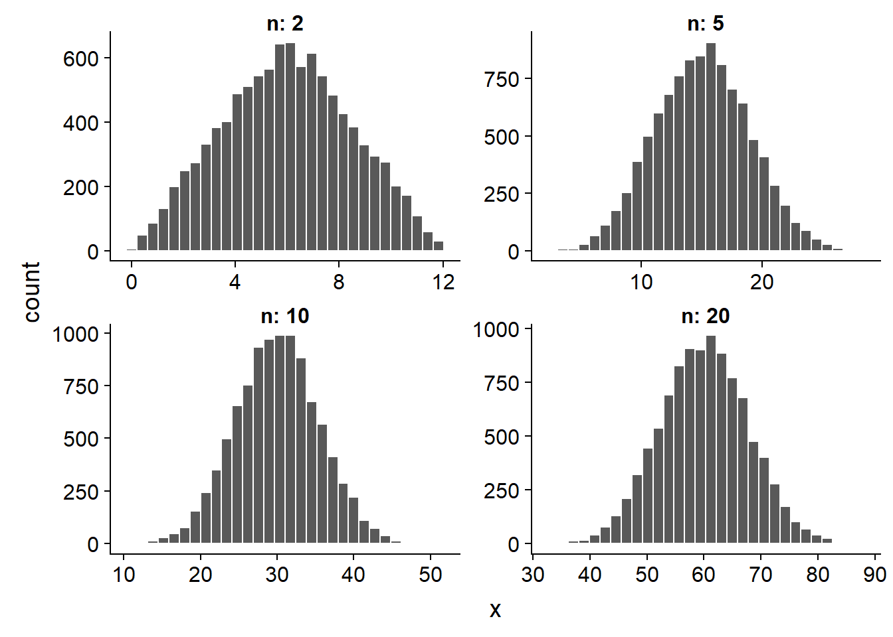
La somme de 2 valeurs a une distribution plutôt triangulaire, mais à partir de \(n\) = 5, on voit apparaître la forme de cloche d’une distribution normale. Ce résultat est un exemple d’une loi statistique plus générale, le théorème de la limite centrale.
Théorème de la limite centrale
Le théorème de la limite centrale indique que lorsqu’on additionne un grand nombre de variables aléatoires indépendantes, peu importe la distribution des variables prises individuellement, la distribution de leur somme s’approche d’une distribution normale.
Pour être strict, il faudrait inclure quelques conditions techniques au sujet des variables qu’on additionne, mais la définition simplifiée ci-dessus suffit pour ce cours.
Cette propriété de la distribution normale explique en partie pourquoi elle constitue un modèle si important en statistiques. Comme nous avons mentionné plus tôt, les variables mesurées dans un système complexe représentent l’effet de nombreux processus à petite échelle. Si on suppose que ces effets sont indépendants et additifs, alors il est naturel que le résultat s’approche d’une distribution normale. Toutefois, il est important de vérifier cette supposition pour une variable donnée.
Distribution normale
Si une variable \(x\) suit une distribution normale (aussi appelée gaussienne), sa densité de probabilité est donnée par:
\[f(x) = \frac{1}{\sigma \sqrt{2 \pi}} e^{-\frac{1}{2} \left( \frac{x - \mu}{\sigma} \right)^2}\]
Cette distribution a deux paramètres, \(\mu\) (qui correspond à la moyenne de \(x\)) et \(\sigma\) (qui correspond à son écart-type).
Sur un graphique de \(f(x)\), \(\mu\) correspond à la position du centre de la distribution, tandis que \(\sigma\) correspond à sa dispersion; plus \(\sigma\) est élevé, plus la distribution s’étend et moins elle est concentrée près de la moyenne.
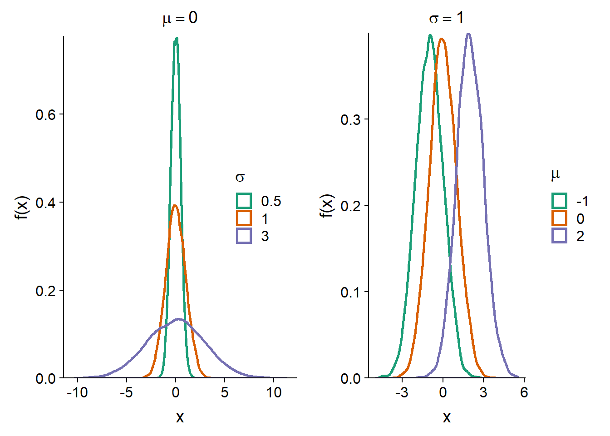
Distribution normale centrée réduite
Si une variable \(x\) suit une distribution normale de moyenne \(\mu\) et d’écart-type \(\sigma\), on peut obtenir une version centrée réduite de \(x\) (notée \(z\)) en soustrayant \(\mu\), puis en divisant par \(\sigma\):
\[z = \frac{x - \mu}{\sigma}\]
Dans R, la fonction
scale(x)appliquée à un vecteurxproduit une version centrée réduite (obtenue en soustrayant la moyenne dexet en divisant par l’écart-type).
La variable \(z\) suit alors une distribution normale centrée réduite, c’est-à-dire \(\mu\) = 0 et \(\sigma\) = 1:
\[f(z) = \frac{1}{\sqrt{2 \pi}} e^{-\frac{1}{2} z^2}\]
Autrement dit, n’importe quelle distribution normale peut être obtenue à partir de \(f(z)\) en déplaçant le centre d’une distance \(\mu\) et en “étirant” la distribution d’un facteur \(\sigma\).
Les valeurs de \(z\) correspondent à la distance de la moyenne, exprimée en unités d’écart-type, ex.: \(z\) = -1.5 signifie un écart-type et demi en-dessous de la moyenne.
Distribution cumulative
Nous avons vu précédemment que la probabilité qu’une variable aléatoire continue se retrouve dans un certain intervalle correspond à l’aire sous la courbe (l’intégrale) de la densité de probabilité dans cet intervalle.
La distribution cumulative d’une variable aléatoire (aussi appelée fonction de répartition) correspond pour chaque valeur \(x\) à la probabilité que la valeur de la variable soit inférieure ou égale à \(x\). Elle est donc égale à l’aire sous la courbe de la densité de probabilité à gauche de \(x\).
Voici une illustration de la distribution cumulative \(F(z)\) d’une variable normale centrée réduite \(z\).
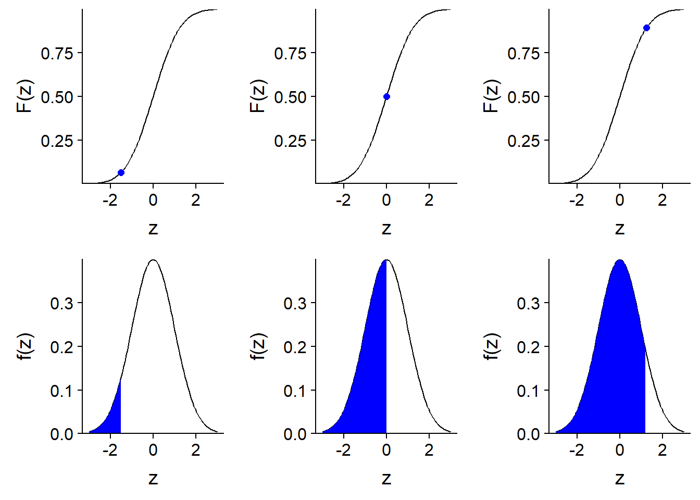
À partir de la distribution cumulative \(F(x)\), on peut facilement calculer la probabilité que \(x\) se trouve dans un intervalle (\(x_1\), \(x_2\)) en faisant la soustraction \(F(x_2)\) - \(F(x_1)\).
Les fonctions de distribution dans R
Quatre fonctions dans R permettent de travailler avec la distribution normale. Dans chaque cas, il faut spécifier la moyenne (mean) et l’écart-type (sd) de la distribution.
rnorm(n, mean, sd)génèrenvaleurs aléatoires à partir d’une distribution normale de moyennemeanet d’écart-typesd.dnorm(x, mean, sd)donne la densité de probabilité associée à la valeurx.pnorm(q, mean, sd)donne la probabilité cumulative associée à une valeurq.qnorm(p, mean, sd)donne la valeur (qpour quantile) associée à une probabilité cumulativepdonnée.
Des fonctions semblables sont définies pour d’autres distributions courantes, comme nous le verrons plus tard.
Par exemple, pour la distribution normale centrée réduite:
- la probabilité cumulative à 2 écarts-type est de 98%;
pnorm(2, mean = 0, sd = 1)## [1] 0.9772499- la probabilité d’être à l’intérieur d’un écart-type de part et d’autre de la moyenne est de 68%;
pnorm(1, mean = 0, sd = 1) - pnorm(-1, mean = 0, sd = 1)## [1] 0.6826895- le troisième quartile (75% de probabilité cumulative) est à 0.67 écart-type au-dessus de la moyenne.
qnorm(0.75, mean = 0, sd = 1)## [1] 0.6744898Diagramme quantile-quantile
Le diagramme quantile-quantile (Q-Q plot) sert à visualiser la correspondance entre deux distributions statistiques; le plus souvent, nous voulons comparer un échantillon à une distribution théorique donnée.
Par exemple, supposons que nous avons 99 observations d’une variable et nous voulons vérifier que sa distribution soit approximativement normale. Nous trions les observations en ordre croissant et associons la première observation au 1er centile de la distribution normale centrée réduite, la deuxième observation au 2e centile, et ainsi de suite jusqu’au 99e centile. Si l’échantillon provient d’une distribution normale, le nuage de points produit par cette association formera une ligne droite.
En effet, si \(x\) a une distribution normale, alors \(x = \mu + \sigma z\) où \(z\) est une variable normale centrée réduite.
Dans R, nous pouvons comparer un vecteur à la distribution normale avec la fonction qqnorm et ajouter une ligne droite au graphique avec la fonction qqline.
test <- rnorm(99, mean = 6, sd = 4)
qqnorm(test)
qqline(test)
Comme vous voyez, pour un échantillon aléatoire tiré d’une distribution normale, la correspondance est très bonne; il y a néanmoins un peu de variation due à l’échantillonnage d’un nombre limité de points.
Maintenant, regardons le diagramme quantile-quantile du diamètre des arbres (DHP) dans le jeu de données de Kejimkujik, tel que vu au dernier cours.
kejim <- read.csv("../donnees/cours1_kejimkujik.csv")
dhp <- kejim$dhp
qqnorm(dhp)
qqline(dhp)
La distribution n’est clairement pas normale. Plus précisément, on constate que:
Pour les valeurs sous la moyenne (à gauche), les points sont au-dessus de la droite, donc les quantiles de l’échantillon sont plus élevés que ceux d’une distribution normale. En étant plus élevés, ils sont plus rapprochés de la moyenne.
Pour les valeurs au-dessus de la moyenne (à droite), les quantiles de l’échantillon sont aussi plus élevés que ceux de la distribution normale. Mais dans ce cas-ci, ils sont donc plus éloignés de la moyenne.
Ainsi, le diagramme quantile-quantile nous indique que la distribution est asymétrique avec des valeurs plus rapprochées à gauche et plus éloignées à droite. Puisqu’il s’agit d’une différence assez flagrante, on pouvait la détecter plus facilement avec un histogramme (ci-dessous). Toutefois, le diagramme quantile-quantile peut détecter des différences plus subtiles, il est donc utile d’apprendre à lire et interpréter ce graphique.

Exercice
Voici un diagramme quantile-quantile comparant un échantillon à une distribution normale. Pouvez-vous décrire comment cet échantillon diffère de la distribution théorique?
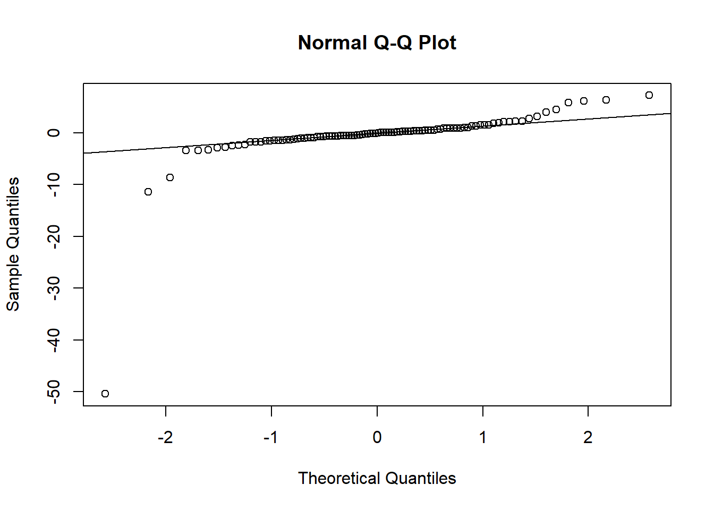
La distribution log-normale
Définition
Une variable \(x\) suit une distribution log-normale si \(y = log(x)\) suit une distribution normale.
De façon équivalente, si \(y\) suit une distribution normale, \(x = e^y\) suit une distribution log-normale.

Propriétés des logarithmes
\(log(x)\) est seulement défini pour \(x > 0\);
\(log(x) = 0\) si \(x = 1\). Un logarithme négatif ou positif représente une valeur de \(x\) inférieure ou supérieure à 1, respectivement.
Le logarithme transforme les multiplications en additions et les divisions en soustractions.
\[log(xw) = log(x) + log(w)\] \[log(x/v) = log(x) - log(v)\]
Donc, dans une échelle logarithmique, la distance entre deux nombres est proportionnelle à leur ratio dans l’échelle originale.
Si nous ne spécifions pas, les logarithmes sont des logarithmes naturels (base \(e\)). Toutefois, un changement de base correspond seulement à un changement d’échelle et n’affecte pas la forme de la distribution. Par exemple, pour convertir en base 10:
\[log_{10}(x) = \frac{log(x)}{log(10)}\]
Utilité de la distribution log-normale
Si la distribution normale tend à être associée à des processus additifs (somme de nombreux effets indépendants), la distribution log-normale est associée à des processus multiplicatifs. Par exemple, si une population croît de 5%, 10% et 3% lors de trois années consécutives, l’accroissement cumulatif correspond à la multiplication: 1.05 x 1.10 x 1.03 = 1.19, soit une augmentation de 19%. Dans un processus multiplicatif, plus une variable est grande, plus elle peut croître, ce qui explique que la distribution résultante soit asymétrique et s’étire vers la droite.
Souvenons-nous que la distribution du DHP de tous les arbres du jeu de données Kejimkujik avait ce type d’asymétrie. Pour vérifier si la distribution du DHP est approximativement log-normale, observons le diagramme quantile-quantile pour le logarithme du DHP.
qqnorm(log(dhp))
qqline(log(dhp))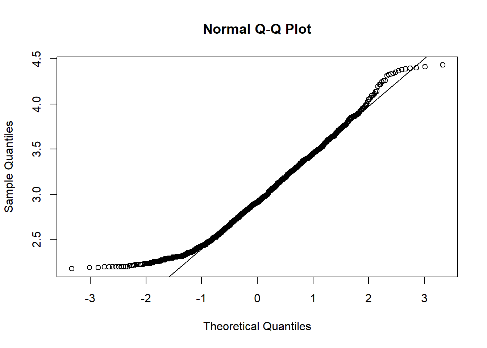
On observe une meilleure correspondance que pour les données non-transformées, sauf au niveau des valeurs les plus petites du DHP dans l’échantillon, qui demeurent plus élevées que prévu par la distribution de référence. Avez-vous une hypothèse pour cette anomalie près du minimum? (Indice: Quels arbres ne sont pas échantillonnés?)
Transformation logarithmique
Dans les prochaines semaines, nous verrons plusieurs méthodes statistiques qui supposent toutes que la variable observée est expliquée par des effets additifs, avec une composante aléatoire suivant une distribution normale.
Ainsi, si le processus qui nous intéresse est plutôt multiplicatif et que la variable mesurée s’approche d’une distribution log-normale, nous pouvons modéliser cette variable après lui avoir appliqué une transformation logarithmique. Il faut toutefois être prudent lors de l’interprétation des résultats. En particulier, la moyenne de \(log(x)\) n’est pas égale au logarithme de la moyenne de \(x\), comme le montre ce graphique.

Dans le graphique ci-dessus, les deux distributions de \(y = log(x)\) ont le même mode (maximum de probabilité), la même médiane et la même moyenne à 0. Toutefois, sur l’échelle originale, la moyenne de \(x\) est plus élevée pour la distribution en bleu, tandis que le mode est plus petit; les deux distributions ont la même valeur médiane (égale à 1).
Exercice
Parmi les variables suivantes, lesquelles s’approchent à votre avis le plus d’une distribution normale, et pourquoi?
- La température moyenne de septembre à Rouyn-Noranda.
- La population des municipalités du Québec.
- Le nombre d’abonnés par compte dans un réseau social (ex.: Twitter).
- Le temps pris par des coureurs pour terminer un marathon.
Résumé
Une distribution discrète est représenté par une fonction de masse de probabilité; une distribution continue est représentée par une fonction de densité de probabilité.
La distribution cumulative d’une variable au point \(x\) donne la probabilité que cette variable soit inférieure ou égale à \(x\).
Quelques distributions continues: uniforme, normale, log-normale. (Nous verrons plus d’exemples de distributions discrètes et continues au cours de la session.)
La distribution normale est caractérisée par sa moyenne \(\mu\) et son écart-type \(\sigma\).
Toute distribution normale peut être ramenée à la distribution normale centrée réduite (\(\mu\) = 0, \(\sigma\) = 1) avec la transformation linéaire: \(z = (x - \mu)/\sigma\).
La transformation logarithmique convertit les effets multiplicatifs en effets additifs, et les distributions log-normales en distributions normales.
Le diagramme quantile-quantile permet de comparer visuellement des données à une distribution de référence.
Estimation de paramètres
Estimation de la moyenne
Supposons qu’on mesure une variable \(x\) sur un échantillon de \(n\) individus choisis aléatoirement dans une population. Nous nous servons de la moyenne de l’échantillon:
\[\bar{x} = \frac{1}{n} \sum_{i = 1}^{n} x_i\]
comme estimateur de \(\mu\), la moyenne de la distribution de \(x\) dans la population. Pour l’instant, nous ne supposons pas que \(x\) suit une distribution normale.
Pour cet exemple, imaginons que les 1161 arbres du tableau de données Kejimkujik représentent la population entière, et que nous échantillonnons une partie de ces arbres.
# dhp est le vecteur du DHP des 1161 arbres
paste("La population a un DHP moyen de", round(mean(dhp), 2), "cm avec un écart-type de", round(sd(dhp), 2), "cm.")## [1] "La population a un DHP moyen de 21.76 cm avec un écart-type de 12.25 cm."Dans R, la fonction sample sert à tirer un échantillon aléatoire des éléments d’un vecteur.
mean(sample(dhp, 20)) # moyenne d'un échantillon de n = 20 arbres## [1] 19.938Les histogrammes ci-dessous montrent la distribution (estimée à partir de 10 000 simulations) du DHP moyen avec une taille d’échantillon \(n\) = 10, 20 ou 40.
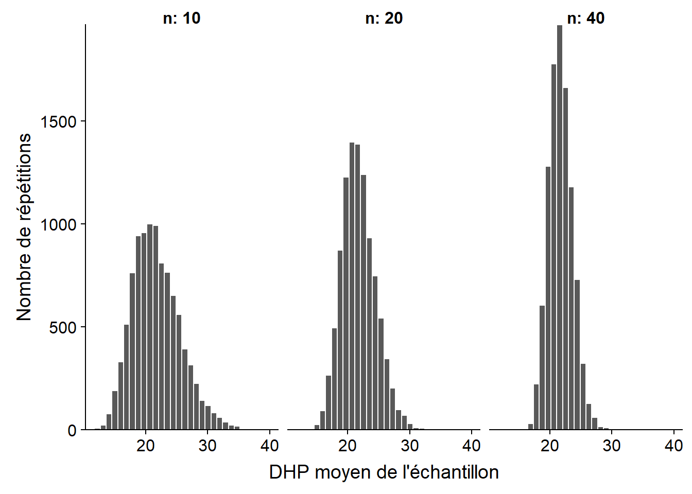
À mesure que la taille de l’échantillon augmente, la distribution devient moins dispersée, mais aussi plus symétrique. Cette deuxième observation est une conséquence du théorème de la limite centrale. Puisque la moyenne est calculée à partir de la somme des valeurs échantillonnées, sa distribution s’approche de la distribution normale pour un \(n\) suffisamment grand.
Pour une variable \(x\) dont la distribution a une moyenne \(\mu\) et une variance \(\sigma^2\), on peut démontrer que \(\bar{x}\) a une moyenne égale à \(\mu\) et une variance égale à \(\sigma^2 / n\). L’écart-type de \(\bar{x}\), qu’on appelle dans ce contexte l’erreur-type (standard error), est donc inversement proportionnelle à la racine carrée de \(n\).
Erreur-type de la moyenne: \[\sigma_{\bar{x}} = \frac{\sigma_{x}}{\sqrt{n}}\]
La moyenne et l’erreur-type de \(\bar{x}\) calculées à partir des 10 000 échantillons simulés ci-dessus concordent avec les prédictions théoriques.
| n | Moyenne (cm) | Erreur-type (cm) | \(\sigma / \sqrt{n}\) |
|---|---|---|---|
| 10 | 21.76 | 3.85 | 3.87 |
| 20 | 21.81 | 2.75 | 2.74 |
| 40 | 21.78 | 1.91 | 1.94 |
Puisque la moyenne de l’estimateur correspond à la valeur du paramètre estimé (\(\mu\)), \(\bar{x}\) est un estimateur non-biaisé de \(\mu\).
Écart-type ou erreur-type
Il est important de ne pas confondre l’écart-type de \(x\) avec l’erreur-type d’un estimateur, comme \(\bar{x}\). L’écart-type de \(x\) mesure la dispersion des valeurs individuelles de la variable par rapport à leur moyenne. L’erreur-type de \(\bar{x}\) mesure la dispersion de la moyenne d’un échantillon par rapport à la moyenne de la population. L’erreur-type diminue avec la taille de l’échantillon.
Puisque l’erreur-type diminue selon \(\sqrt{n}\) plutôt que \(n\), si on veut diminuer cette erreur-type de moitié, il faut multiplier la taille de l’échantillon par 4.

Notez aussi que l’erreur-type dépend seulement de la taille de l’échantillon, pas de celle de la population. Cela est vrai tant que l’échantillon est petit par rapport à la population. Lorsqu’on échantillonne une fraction significative de la population (disons plus de 5%), l’erreur-type réelle est plus petite que \(\sigma / \sqrt{n}\).
Estimation de la variance
Pour estimer la variance \(\sigma^2\) d’une variable \(x\), on pourrait calculer la variance de l’échantillon avec l’équation vue au dernier cours.
\[s^2 = \frac{1}{n} \sum_{i = 1}^n \left( x_i - \bar{x} \right)^2 \]
Ici, on utilise \(s^2\) pour la variance d’un échantillon pour différencier de \(\sigma^2\), le paramètre de la population.
Comme auparavant, nous testons cet estimateur en simulant 10 000 échantillons du vecteur de DHP avec \(n\) = 10, 20 et 40. Le tableau suivant montre la moyenne de \(s^2\) et son ratio avec la valeur de \(\sigma^2\) pour la population (150.1 cm\(^2\)).
| n | Moyenne de \(s^2\) (cm\(^2\)) | Moyenne de \(s^2\) / \(\sigma^2\) |
|---|---|---|
| 10 | 136.3 | 0.90 |
| 20 | 143.1 | 0.95 |
| 40 | 146.6 | 0.97 |
Ce résultat montre que la variance de l’échantillon ainsi calculée sous-estime systématiquement la variance de la population. Il s’agit donc d’un estimateur biaisé. Pourquoi est-ce le cas?
Le problème est que l’estimateur \(s^2\) n’est pas basé sur la moyenne de la population, mais sur son estimé \(\bar{x}\) calculé à partir du même échantillon. Par définition, l’échantillon est toujours centré sur \(\bar{x}\), mais \(\bar{x}\) est à une certaine distance de \(\mu\). Donc, les écarts à \(\mu\) sont un peu plus grands que les écarts à \(\bar{x}\).
En fait, l’estimateur définit ci-dessus sous-estime la variance de la population dans un ratio \((n-1)/n\), comme le montre la dernière colonne du tableau (0.9 = 9/10, 0.95 = 19/20). Dans ce cas, on peut corriger le biais en multipliant l’estimateur par \(n/(n-1)\), ce qui donne l’estimateur non-biaisé:
\[s^2 = \frac{1}{n - 1} \sum_{i = 1}^n \left( x_i - \bar{x} \right)^2\]
Sa racine carrée constitue un estimateur pour l’écart-type de la population:
\[s = \sqrt{\frac{1}{n - 1} \sum_{i = 1}^n \left( x_i - \bar{x} \right)^2}\]
Contrairement à \(s^2\), l’estimateur \(s\) pour l’écart-type est biaisé, mais il demeure le plus utilisé, puisqu’il n’existe pas de formule aussi simple et non biaisée pour l’écart-type.
Finalement, on utilise aussi \(s\) comme estimateur de \(\sigma\) pour le calcul de l’erreur-type de \(\bar{x}\) (\(s / \sqrt{n}\)).
Degrés de liberté
Une autre façon d’expliquer la division par (\(n - 1\)) dans le calcul de \(s^2\) fait appel au concept de degrés de liberté.
Le nombre de degrés de liberté correspond au nombre de données indépendantes utilisées dans le calcul d’une statistique. Ici, \(s^2\) est calculée à partir des déviations entre chaque observation de \(x\) et leur moyenne (\(x_i - \bar{x}\)). Comme nous avons vu au premier cours, la définition de \(\bar{x}\) assure que la somme de ces déviations est égale à 0. Dans ce cas, lorsqu’on connaît les \(n - 1\) premières déviations, on peut automatiquement déduire la dernière, qui n’est donc pas une donnée indépendante.
Biais et erreur-type d’un estimateur
Les notions de biais et d’erreur-type ont été présentées brièvement plus haut.
Plus généralement, si on estimons un paramètre \(\theta\) (ex.: \(\mu\)) avec un estimateur \(\hat{\theta}\) (ex.: \(\bar{x}\)), on peut décomposer l’erreur carrée moyenne (mean square error) entre \(\hat{\theta}\) et \(\theta\) en deux composantes. Note: Dans l’équation ci-dessous, la fonction \(E[]\) est une autre façon de représenter l’opération de la moyenne.
\[ E[(\hat{\theta} - \theta)^2] = E[(\hat{\theta} - E[\hat{\theta}])^2] + (E[\hat{\theta}] - \theta)^2 \]
Cette équation nous dit que l’écart carré moyen entre un estimateur et le paramètre est la somme de:
l’écart carré moyen entre l’estimateur et la moyenne de l’estimateur (autrement dit, la variance de l’estimateur, ou le carré de son erreur-type);
le carré de l’écart entre la moyenne de l’estimateur et le paramètre (cet écart est le biais);
Donc, on a la relation suivante: Erreur carrée moyenne = (Erreur-type)\(^2\) + (Biais)\(^2\).
Ces deux sources d’erreur ont des propriétés différentes. L’erreur-type est due à la taille limitée de l’échantillon et diminue lorsque \(n\) augmente. Le biais est une erreur systématique qui ne dépend pas de la taille de l’échantillon, mais peut être dû à un estimateur biaisé où à un échantillonnage non représentatif de la population.
Exercice
Afin d’estimer la densité moyenne du bois de pin gris sur un site, vous échantillonnez d’abord 9 arbres, qui ont une densité moyenne de 450 kg/m\(^3\) avec un écart-type de 90 kg/m\(^3\).
Quelle est l’erreur-type de cette moyenne?
Si vous vouliez connaître la moyenne avec une erreur-type d’au plus 10 kg/m\(^3\), combien d’arbres vous attendez-vous à devoir échantillonner?
Intervalle de confiance
Estimateur suivant une distribution normale
Si un échantillon est tiré d’une distribution de moyenne \(\mu\) et d’écart-type \(\sigma\), nous avons vu que la moyenne de l’échantillon \(\bar{x}\) a une moyenne de \(\mu\) et un écart-type égal à \(\sigma / \sqrt{n}\).
Supposons en plus que \(\bar{x}\) suit une distribution normale. C’est toujours le cas lorsque \(x\) suit elle-même une distribution normale. Mais grâce au théorème de la limite centrale, c’est aussi une bonne approximation pour d’autres distributions de \(x\), en autant que l’échantillon soit assez grand.
Dans ce cas, la variable \(z\) que nous définirons comme:
\[ z = \frac{\bar{x} - \mu}{\sigma / \sqrt{n}} \]
suit une distribution normale centrée réduite. On peut donc utiliser cette distribution théorique pour déterminer la probabilité que \(\bar{x}\) se retrouve dans un intervalle donné.
Intervalle de probabilité déterminée
À l’opposé, on peut déterminer l’intervalle de \(\bar{x}\) correspondant à une probabilité donnée autour de la moyenne.
Par exemple, l’intervalle entre le premier quartile (probabilité cumulative de 25%) et le troisième quartile (probabilité cumulative de 75%) correspond à une probabilité de 50%. On peut déterminer ces quantiles dans R avec qnorm.
c(qnorm(0.25), qnorm(0.75))## [1] -0.6744898 0.6744898Note: Par défaut, qnorm utilise les paramètres mean = 0 et sd = 1.
L’intervalle est symétrique autour de la moyenne (0) parce que la distribution normale est symétrique et qu’on a choisi des probabilités à distance égale de 50%.
Convertissons maintenant cet intervalle de \(z\) en intervalle de \(\bar{x}\):
\[ \left( -0.674 \le \frac{\bar{x} - \mu}{\sigma / \sqrt{n}} \le 0.674 \right)\]
\[ \left( - 0.674 \frac{\sigma}{\sqrt{n}} \le \bar{x} - \mu \le 0.674 \frac{\sigma}{\sqrt{n}} \right)\] Il y a une probabilité de 50% que la moyenne de l’échantillon \(\bar{x}\) se trouve dans un intervalle de 0.674 fois l’erreur-type de part et d’autre du paramètre \(\mu\).
Admettons qu’on représente la valeur de \(z\) correspondant à une probabilité cumulative \(p\) par \(z_p\). Par exemple, \(z_{0.25}\) est le premier quartile. Alors, nous ré-écrivons l’intervalle ci-dessus comme:
\[ \left( z_{0.25} \frac{\sigma}{\sqrt{n}} \le \bar{x} - \mu \le z_{0.75} \frac{\sigma}{\sqrt{n}} \right)\]
Pour un intervalle de probabilité de 90%, nous remplacerions \(z_{0.25}\) et \(z_{0.75}\) par \(z_{0.05}\) et \(z_{0.95}\). En effet, un intervalle de 90% exclut 10% de la distribution et puisqu’on souhaite un intervalle centré, on exclut 5% des deux extrémités de la distribution, tel qu’indiqué par la section coloriée en rouge ci-dessous.
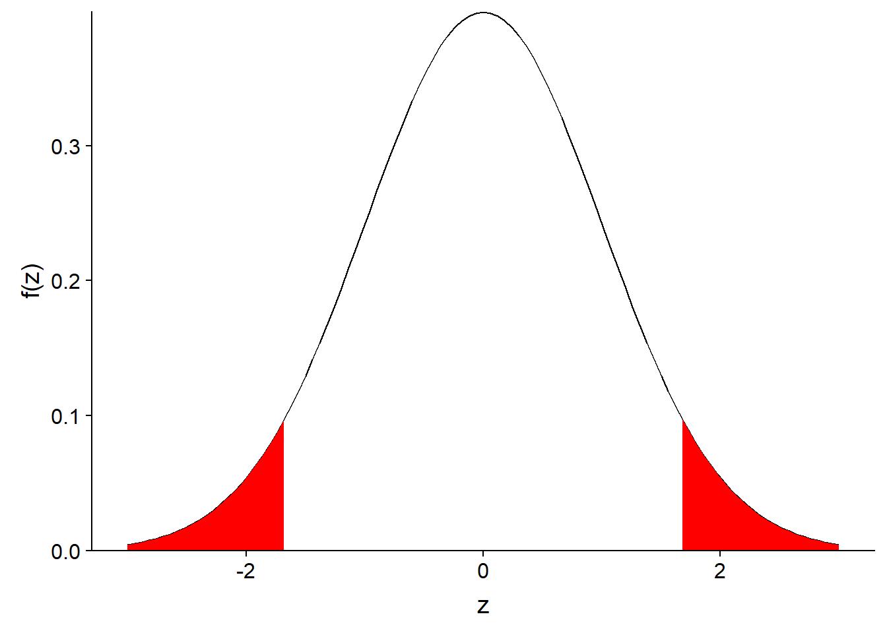
Donc, de façon générale, si on représente par \(\alpha\) la probabilité exclue, l’intervalle contenant (100% - \(\alpha\)) de la distribution de \(\bar{x}\) correspond à:
\[ \left( z_{\alpha/2} \frac{\sigma}{\sqrt{n}} \le \bar{x} - \mu \le z_{1-\alpha/2} \frac{\sigma}{\sqrt{n}} \right)\]
Pour des raisons historiques, l’intervalle de 95% correspondant à \(\alpha\) = 0.05 est le plus souvent utilisé:
\[ \left( z_{0.025} \frac{\sigma}{\sqrt{n}} \le \bar{x} - \mu \le z_{0.975} \frac{\sigma}{\sqrt{n}} \right)\]
En remplaçant les quantiles par leur valeur, on obtient: \[ \left(- 1.96 \frac{\sigma}{\sqrt{n}} \le \bar{x} - \mu \le 1.96 \frac{\sigma}{\sqrt{n}} \right)\]
Intervalle de confiance
Pour résumer, si nous échantillonnons une variable \(x\) et calculons sa moyenne \(\bar{x}\), nous pouvons dire, par exemple, que nous avons 95% de probabilité d’obtenir un estimé \(\bar{x}\) qui se trouve à \(\pm\) 1.96 erreurs-type du paramètre \(\mu\), qui est inconnu.
Cela suppose toujours que notre modèle est bon, c’est-à-dire que la statistique \(\bar{x}\) est bien représentée par une distribution normale.
Donc, après avoir calculé \(\bar{x}\) et calculé son erreur-type, nous établissons un intervalle de 1.96 erreurs-type autour de \(\bar{x}\):
\[ \left(\bar{x} - 1.96 \frac{\sigma}{\sqrt{n}}, \bar{x} + 1.96 \frac{\sigma}{\sqrt{n}} \right)\]
D’après notre modèle, nous pouvons affirmer que pour 95% des échantillons possibles de \(x\), l’intervalle ainsi calculé contiendra la valeur de \(\mu\). Il s’agit donc d’un intervalle de confiance à 95% pour \(\bar{x}\).
Interprétation de l’intervalle de confiance
La probabilité associée à un intervalle de confiance est basée sur la variabilité de \(\bar{x}\) d’un échantillon à l’autre. Elle constitue une probabilité a priori (avant d’avoir échantillonné).
Le paramètre \(\mu\) est fixe. Une fois que l’estimé \(\bar{x}\) est obtenu pour un échantillon donné, l’intervalle de confiance contient \(\mu\) ou ne le contient pas.
Parce que le paramètre \(\mu\) n’est pas une variable aléatoire, il n’a pas de distribution statistique. Il est donc erroné d’affirmer, après avoir calculé un intervalle de confiance pour un échantillon donné, que “le paramètre \(\mu\) a 95% de probabilité d’être à l’intérieur de cet intervalle”.
Intervalle de confiance d’une moyenne
Nous avons vu que l’intervalle de confiance à (100% - \(\alpha\)) de la moyenne \(\bar{x}\) est donné par:
\[ \left( \bar{x} + z_{\alpha/2} \frac{\sigma}{\sqrt{n}}, \bar{x} + z_{1 - \alpha/2} \frac{\sigma}{\sqrt{n}} \right)\]
Le seul problème avec cette équation est que nous ne connaissons pas le paramètre \(\sigma\). De plus, si nous remplaçons \(\sigma\) par son estimé \(s\), la probabilité associée à l’intervalle devient inférieure à (100% - \(\alpha\)). En pratique, il faut donc élargir l’intervalle pour prendre en compte notre connaissance imparfaite de l’écart-type des données.
La solution de ce problème a été découverte par William Gosset, qui l’a publié sous le pseudonyme de Student. Lorsqu’on utilise un estimé de l’écart-type, l’intervalle de confiance n’est plus basé sur la distribution normale centrée réduite \(z\), mais plutôt la distribution \(t\) de Student.
La distribution comporte un paramètre, le nombre de degrés de liberté, qui correspond dans ce cas-ci à \(n - 1\). Ainsi, la version corrigée de l’intervalle de confiance à (100% - \(\alpha\)) pour \(\bar{x}\) est:
\[ \left( \bar{x} + t_{(n-1)\alpha/2} \frac{s}{\sqrt{n}}, \bar{x} + t_{(n-1)1 - \alpha/2} \frac{s}{\sqrt{n}} \right)\]
où le \(n-1\) entre parenthèses indique le nombre de degrés de liberté de la distribution \(t\).
Distribution t
Le graphique ci-dessous compare la distribution normale centrée réduite (\(z\)) avec des distributions \(t\) à 4 et 9 degrés de liberté. Plus le nombre de degrés de liberté est petit, plus la distribution \(t\) s’éloigne de la normale. En particulier, l’écart-type augmente et les valeurs loins de la moyenne ont une probabilité plus grande, ce qui explique que l’intervalle de confiance construit à partir de la distribution \(t\) est plus large.
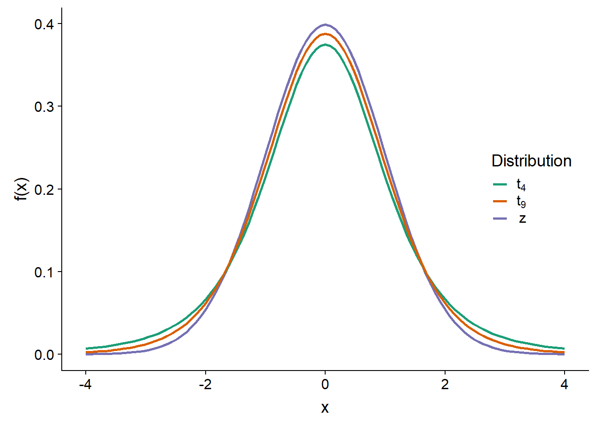
Bien que ce soit difficile à voir sur ce graphique, la distribution \(t\) a aussi une forme différente. Même comparée à une distribution normale de même écart-type, la distribution \(t\) a une plus grande probabilité d’obtenir des valeurs extrêmes (très loin de la moyenne).
Lorsque le nombre de degrés de liberté est élevé, comme c’est le cas si on calcule la moyenne de nombreuses observations, la distribution \(t\) s’approche de la distribution normale centrée réduite.
Résumé
Un estimateur est biaisé lorsque sa moyenne sur l’ensemble des échantillons possibles diffère de la valeur du paramètre à estimer.
L’erreur-type mesure la dispersion d’un estimateur d’un échantillon à l’autre, elle diminue avec la taille de l’échantillon.
Un intervalle de confiance est défini autour d’un estimé de manière à ce que sur l’ensemble des échantillons possibles, il y ait une probabilité spécifique que l’intervalle de confiance obtenu contienne la valeur du paramètre à estimer.
En raison du théorème de la limite centrale, la différence entre la moyenne d’un échantillon et celle de la population suit souvent une distribution approximativement normale.
La distribution \(t\) de Student remplace la distribution normale centrée réduite pour estimer l’intervalle de confiance de la moyenne d’un échantillon, lorsque l’écart-type de la population est inconnu. Cette distribution a des valeurs extrêmes plus fréquentes que la distribution normale, surtout lorsque le nombre de degrés de liberté est faible.
Référence
Le site Seeing Theory présente de façon visuelle et interactive plusieurs concepts statistiques. Par exemple, les chapitres 3 (Probability Distributions) et 4 (Frequentist Inference) se rapportent aux concepts vus dans ce cours.